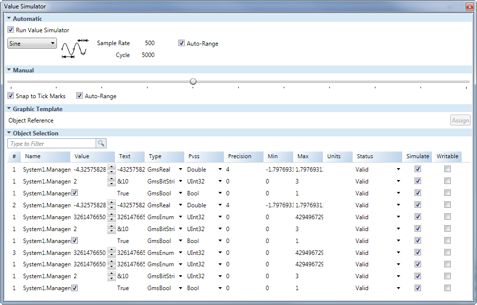

Value Simulator View

The Value Simulator view allows you to select, view, and adjust the settings for simulating property values to test how graphic settings will be applied. The four sections, Automatic, Manual, Graphic Template, and Object Selection, can be expanded or collapsed.
Value Simulator View | |
Field | Description |
Automatic Section | |
Run Value Simulator
| Select this option to run the automatic simulation of data points or values associated with element properties. If the check box is cleared, simulation will not be run on the data points. |
Type Drop-Down Menu | Select a simulation type, view the simulation type selected, and adjust the Sample Rate and Cycle of the simulation values. |
Auto Range | Run an enable automatic calculation of the minimum and maximum value range for each data point selected for simulation. If the check box is cleared, you can manually set the Min and Max value range for each data point. |
Manual Section
| |
Slider | Manually control the simulation. The tick marks on the slider are 1/10 apart from each other and the value of each tick mark is dependent on the Min and Max data value range entered. The data point Value range and Text are updated as you move the slider. |
Snap to Tick Marks | Snap the slider to the nearest tick mark when moving the slider. |
Auto Range | Use the slider to represent the data point range and manually the values for simulation. If the check box is cleared, you can manually enter the Min and Max value range for each data point. |
Graphic Template Section Enter a data point reference instance to assign to an object on a Graphic Template and test for COVs. | |
Object Reference | Enter a data point instance text to filter the list of all data points currently used in an evaluation and in a currently open graphic. Click Assign to start the COV subscription on the graphic. |
Object List Section All data points available for simulation are listed with the following information: | |
Filter | Enter text to filter the list of all data points currently used in an evaluation and in a currently open graphic. |
# | Display the number of times the data point is used in any evaluation followed by the number of times this data point has been subscribed to for value changes. Display-Only field. |
Name | Display the name of the data point. Display-Only field. |
Value | Display the current value of the data point. Display-Only field. |
Text | Display the formatted version of the current value. Display-Only field. |
Type | Display the expression type of the data point or allows you to select a data point type from the drop-down menu. |
Data Point Type | Display the PVSS-related data types and allows you to select a data point type from the drop-down menu. |
Precision | Display the actual number or decimal points. Formatted values are rounded with the precision. |
Min | Display the minimum range of the data point. If the minimum range is empty, |
Max | Display the maximum range of the data point. If the maximum range is empty, |
Units | Enter a measure of units for the data point. |
Status | Select a condition to apply to a data point from the drop-down menu or view the last current status of a data point. Available status messages:
|
Simulated | Include the data point value in the simulation. If checked, the data point is included in the value simulation. |
Writable | Use the manual slider and simulator to write values down to the system (for example, to a field device). NOTE: The Value field is not affected by this check box. This check box is not checked by default. |
Id | Displays the unique communication ID of the data point. Display-Only field. |
Related Topics
For background information, see Value Simulation.
For related procedures, see Simulating Properties.